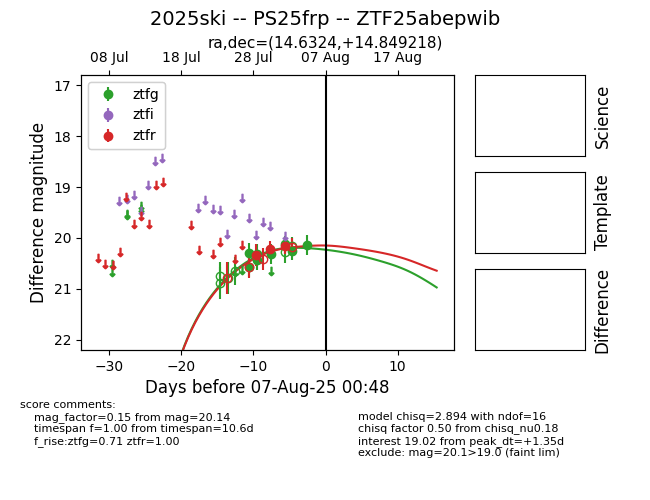

Target 2025ski at 2025-08-07 06:30, see:
FINK: fink-portal.org/2025ski
Lasair: lasair-ztf.lsst.ac.uk/objects/2025ski
ALeRCE: alerce.online/object/2025ski
TNS: wis-tns.org/object/2025ski
YSE: ziggy.ucolick.org/yse/transient_detail/2025ski
alt names
ZTF25abepwib (ztf,fink)
2025ski (tns,yse)
PS25frp (panstarrs)
coordinates:
equatorial (ra, dec) = (14.6324,+14.84922)
galactic (l, b) = (125.4928,-47.98727)
photometry
last ztfg=20.29, ztfr=20.17
10 ztfg, 4 ztfr detections
